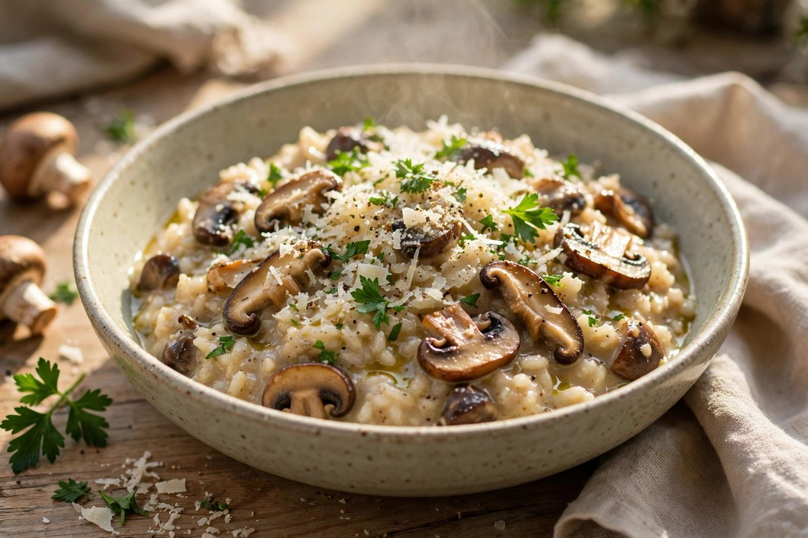

Home › Guides
Risotto: The Slow, Stirred Rice Dish Done Right

Risotto is one of the most satisfying dishes in Italian cooking, and one of the most misunderstood. It is not just rice cooked in stock. It is a technique: toasting the rice, adding hot stock a little at a time, and stirring until the rice releases its starch into a creamy sauce. Once you learn the method, you can make endless variations.
The right rice
Use a short-grain Italian rice such as Arborio, Carnaroli or Vialone Nano. These varieties absorb liquid slowly and release starch as they cook, which is what makes risotto creamy. Carnaroli is the most forgiving, because it holds its shape well. Long-grain rice and basmati will not work; they stay separate and never turn creamy.
Do not wash the rice. Washing removes the surface starch that makes the dish. Measure about 80 grams of dry rice per person as a first course, or 100 grams as a main. Keep the rice dry until it goes into the pan.
Stock: hot, and plenty of it
Risotto needs about three to four times as much stock as rice by volume, roughly one litre for 320 grams of rice. The stock must be hot and kept simmering in a separate pot. Adding cold stock stops the cooking and makes the rice cook unevenly.
Homemade stock is best, but a good-quality stock cube dissolved in hot water works. Season the stock lightly, because it reduces as it cooks and the finished dish gets salt from the cheese too. For a mushroom risotto, a light vegetable stock is ideal; for a seafood risotto, a fish stock.
The method, step by step
Start by softening finely chopped onion in butter or olive oil until translucent, about five minutes. Add the rice and stir for one to two minutes until the grains are hot and slightly translucent at the edges. This is the tostatura, and it helps the grains stay separate.
Add a ladle of hot stock and stir gently until it is mostly absorbed, then add another ladle. Keep going, ladle by ladle, for about 18 minutes. Stir often but not constantly; the rice needs contact with the pan to release starch. Taste as you go. The rice is done when it is creamy and al dente, with a slight bite.
Mantecatura: the creamy finish
Take the pan off the heat when the rice is done and still slightly loose. Stir in a knob of cold butter and a handful of grated Parmesan, then cover and rest for one minute. This final step, called mantecatura, is what gives risotto its shine and its creamy texture.
The finished risotto should flow slowly when you shake the pan, like a thick wave. It should not sit in a stiff mound, and it should not be soupy. Serve it immediately in warm bowls, because risotto waits for no one.
Variations to try
Risotto alla Milanese, with saffron, is the classic. Risotto ai funghi uses mushrooms cooked separately and stirred in at the end. A lemon and asparagus risotto is a spring favourite. For seafood, add prawns or mussels in the last five minutes so they do not overcook.
Whatever you add, keep the base method the same. Add vegetables or meat at the right moment, not at the start, so each ingredient is cooked properly. And remember that Parmesan is traditional in most risottos, but it is left out of seafood versions.
Frequently Asked Questions
Do I have to stir risotto constantly?
No. Stir often, especially near the end, but you can pause between ladles. Constant stirring is not required and can break the grains.
Why is my risotto gluey?
Usually the wrong rice, or the rice was washed, or it cooked too long. Use Arborio or Carnaroli, do not wash it, and stop when it is al dente.
Can I reheat leftover risotto?
It is best fresh, but leftovers make excellent arancini: roll the cold risotto into balls, coat in breadcrumbs and fry until crisp.